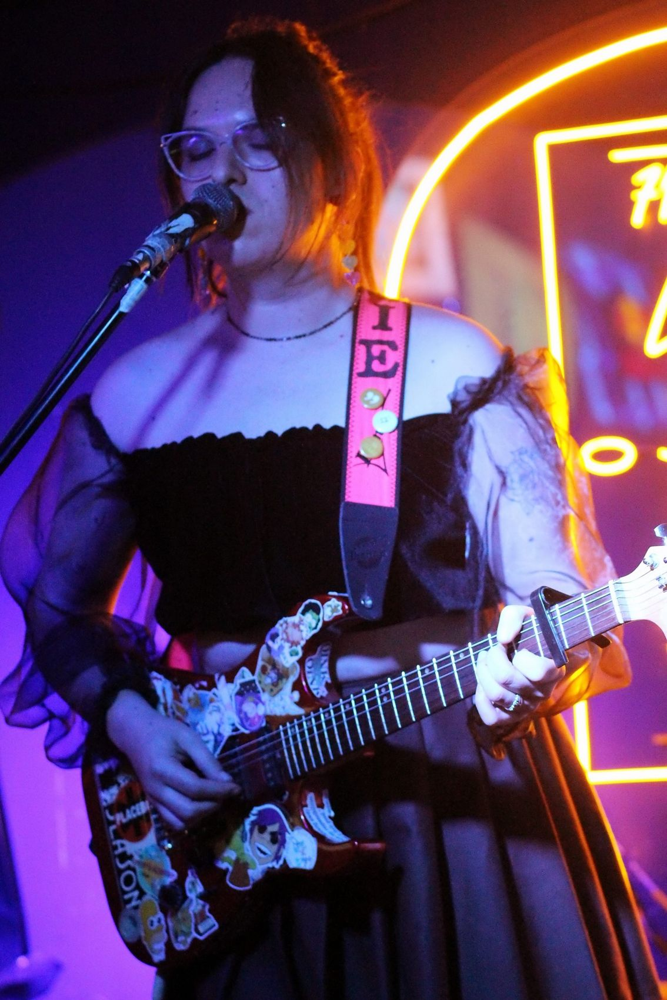
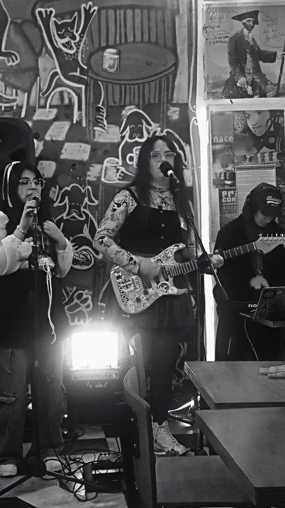
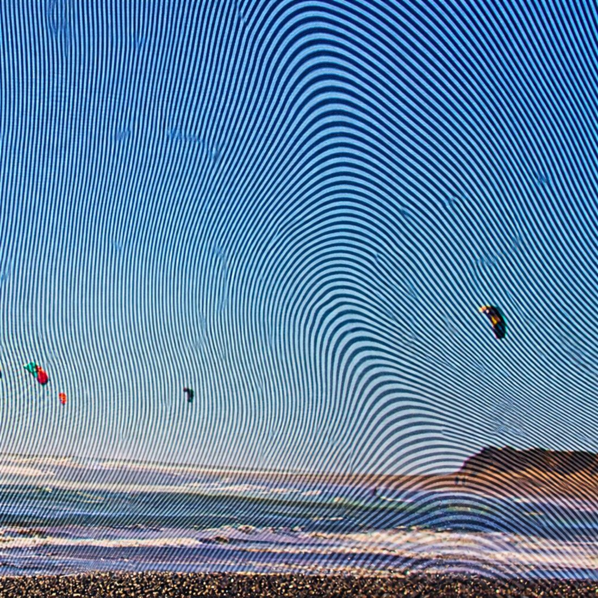

MatildePizarro
Cantautora de rock alternativo. Villa Alemana, Chile.

Una guitarra, varias etapas
Matilde Pizarro es una cantautora chilena de Villa Alemana. Hace rock alternativo, entre el dream pop y el shoegaze.
Empezó a tocar en bandas en 2011 y durante ocho años fue guitarrista de Time y Miopía, con las que recorrió escenarios y festivales de Chile. En 2018 comenzó su proyecto solista, Timbuka, con un EP en 2019 y un disco en 2020.
Desde 2026 trabaja bajo su propio nombre, con un sonido más eléctrico y banda en vivo. Ha tocado en Valparaíso, Viña del Mar, Villa Alemana y Santiago.

Quince años de escenarios
Cada barra está dibujada a escala. Toca una para ver el detalle.
Time y Miopía
Guitarrista en ambas bandas. Tocó en escenarios y festivales de Chile.
Lo que puedes escuchar

EP 2019 · Disco 2020
TEXTURAS / VUELO: música, letra, grabación, mezcla y máster de Matilde Pizarro.
Para verla tocar
Canal de YouTube: youtube.com/@canalmatildepizarro